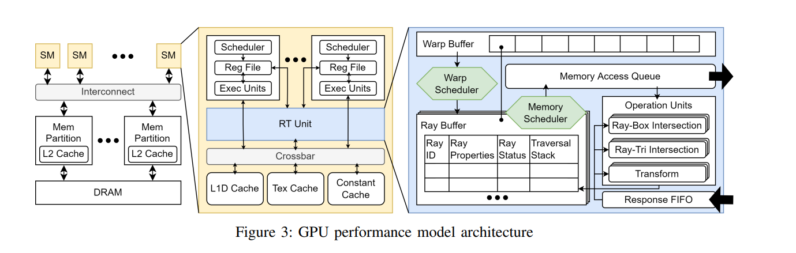
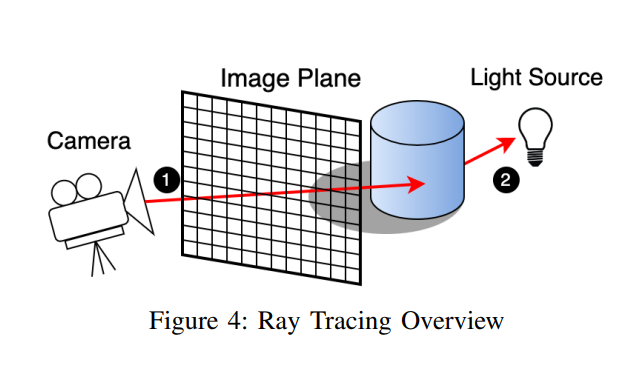

Paper Reading 2 - Vulkan-Sim:A GPU Archtecture Simulator for Ray Tracing
这篇博客记录阅读Vulkan-Sim: A GPU Architecture Simulator for Ray Tracing时的笔记。主要集中于对名词的理解，以及原文的框架结构，将忽略部分细节。原文对应的video和code可以在Tor Aamodt的个人主页找到。
ABSTRACT
光追会生成比光栅化更具说服力的视觉效果，从来生成更逼真的图像。近期的硬件进步已经可以使光追能够实时应用。当前的GPU设计了专用的光追加速单元，游戏开发者已经开始利用光追API为玩家带来更逼真的图形效果。业界共同贡献了Vulkan, 它最近推出了用于光追的开放标准API。然而将这一API如何映射到硬件的细节却很少被披露。在本文中，我们介绍了Vulkan-Sim，这是一个详细的周期级别的模拟器，用于支持光追的框架研究。我们扩展了GPGPU-Sim，并将其与Mesa集成。Mesa是一个开源图形库，用于支持Vulkan API，并添加了专门的ray traversal and intersection units光线遍历与相交单元。我们还展示了Vulkan光追管线与现代GPU之间的明确映射，使用一种我们称之为delayed intersection and any-hit execution的技术。此外，我们使用Valkan-Sim评估了几个光追的工作负载，识别了我们建模的光追硬件的瓶颈和低效之处。为了展示Vulkan-Sim是实用性，我们进行了两个案例研究，评估了最近由业界提出的或部署的旨在提高光追性能的技术。
NOUN DEFINITION
Vulkan API & Mesa 3D & Vulkan-Sim:Valkan API是一种约定好的接口，可以理解为一种规范。Mesa是实现了这一规范的开源库，而Vulkan-Sim则是用于研究Valkan API在不同硬件架构上的性能和优化的工具。它们的组合可以用于研究GPU架构的设计以提高使用Vulkan-API的应用程序的性能。off-chip DRAM: 片外动态随机存取存储器。片外指这种DRAM不位于主处理器芯片上，而是位于芯片外部。multiple execution units: GPU的执行单元是处理器内部的功能单元，用于执行各种计算任务，包括算术运算、逻辑运算等等。在每个SM中，有多个执行单元，每个执行单元可以同时执行多个线程的指令（通常是相同的指令但是不同的数据）。scalar threads: 标量线程是指应用程序的单个线程，执行单个指令。branch divergence: 当程序中的线程或执行单元遇到一个条件分支语言时，这个分支语言会根据某个条件的真假决定程序执行的路径。如果不同线程或执行单元在这个条件上有结果的不同，就会导致分支分歧。Greedy-then-Oldest(GTO): 是一种调度策略，它用于确定GPU中warp的执行顺序。
SECTION SUMMARY
Introduction
光追在最近的图形负载中变得越来越普遍，它能带来更逼真的图形效果。随着硬件的进步，它正在被纳入越来越多的实时工作负载中。然而，光追的计算需求仍然很高，目前的硬件只允许开发者实现有限数量的光追效果，否则游戏帧率将下降到不能流畅游玩的水平。Nvidia的网站上列出了对现有支持GPU光追加速的视频游戏进行的性能分析结果，光追平均占用了渲染时间的28%。尽管通过改善硬件来加速光追的研究已经进行多年，但是近年对光追的需求越来越高。
Vulkan-Sim将Vulkan光追管道的执行映射到GPU上，并集成了AccelWattch，以提供功耗和能量的估算。实验表明，Vulkan-Sim可以生成与经过行业验证的Vulkan实现相比高度保真的图像。之前的图形硬件模拟器要么不公开，要么不灵活。Vulkan-Sim拓展了我们之前的工作，该工作主要集中在使用自定义的基于CUDA的ray tracer，并且开发了与该ray tracer相关的硬件加速器模型。而拓展后Vulkan-Sim使得在更接近行业标准的光追工作负载中使用已开发的硬件加速器模型成为可能。
本文的主要贡献如下：
- 使用一种被称为
delayed intersection and any-hit execution的方法将Vulkan ray tracing pipeline映射到现代GPU中。 - 引入
Vulkan-Sim，是GPGPU-Sim支持Vulkan ray tracing的一种拓展，并提供了一个通用光追加速单元的性能模型。我们展示了Vulkan-Sim与NVIDIA 2080的性能模型相关性高达95.7%。 - 通过两个案例来说明
Vulkan-Sim的使用。这两个案例分别研究了warp divergence reduction线程分歧减少和independent thread scheduling独立线程调度的光追硬件优化的潜力。
Background
本节概述了光追加速器以及介绍了如何使用Vulkan API进行光追。
Baseline GPU Architecture

Figure3.png展示了Vulkan-Sim中建模的GPU架构。GPU由多个计算单元组成，这些计算单元在Nvidia术语中被称为Streaming Multiprocessors(SMs)流式多处理器。SMs通过on-chip interconnect片上互联连接到内存分区。内存分区包括内存访问调度逻辑，用于与off-chip DRAM进行接口交互。在每个SM内部，有多个执行单元。应用程序中的标量线程被组织成warp，即包含32个线程的集合。它们一起使用单指令多线程执行，即warp中的线程在不同的数据上执行相同的指令。在出现不同的分支结果（被称为branch divergence分支分歧）时，SM使用一种叫做immediate post-dominator reconvergence的技术来串行执行不同路径的线程。SM内的warp以Greedy-then-Oldest(GTO)方式进行调度，该方式会从一个warp开始调度，直到它停止执行。每个SM都有自己的L1 data cache, texture cache, constant cache，通过crossbar连接到执行单元。
尽管此架构专为计算应用和计算光栅的图形学设计，但是制造商最近已经添加了光追加速器，以通过将计算从SMs中卸载来更高效地处理光追图形。为了模拟这种硬件，Vulkan-Sim在每个SM中建模了一个光追加速器，被称为RT unit。Vulkan-SIM中的RT unit是基于Intersection Prediction for Accelerated GPU Ray Tracing构建的，将在Timing Model章节中展开。
Ray Tracing Accelerators
现代GPUs具备用于光追的硬件加速单元。这些光追单元与GPU协作，扮演了两个关键角色。首先，RT unit加速了光追中使用的关键数据the bounding volume hierarchy包围体层次结构。其次，RT unit使用Box Intersection Evaluators光-盒相交测试和Triangle Intersection Evaluators光-物相交测试计算光线与场景中的几何体之间的交点。在Vulkan-Sim中，当在一个Shader着色器中调用Vulkan的vkCmdTraceRaysKHR函数时，这个调用会触发RT Unit的活动。目前，关于行业GPU光追加速器的实现公开的详细信息非常有限。缺乏的细节包括warp如何共存以及内存请求如何调度。因此，Vulkan-Sim采用了一个通用的光追性能模型，，将在Timing Model章节中展开。在Vulkan-Sim中建模的RT unit采用了T&I Engine和SGRT中所描述的技术。这些设计遵照类似的方案，采用专用的流水线硬件单元用于加速结构遍历和光线交点计算。我们修改了这些设计，是他们能够与GPU结合，并将它们集成到我们的RT unit。
Ray Tracing With Vulkan

在这一部分，我们将介绍光追以及在Vulkan中如何执行光追。光追是一种渲染技术，通过模拟光线在场景中传播以围绕物体传播，生成逼真的效果。Figure4显示了一个简单的光追示例。包括primary ray和secondary ray。primary ray从摄像机开始，穿过image plane进入场景，并计算像素(1)的颜色。如果primary ray击中了物体，我们可以发射secondary ray朝向光源，以确定该像素点是否被遮挡(2)。
Simulating vulkan ray tracing
在这一部分，我们描述了模拟Vulkan光追内核的挑战，以及在Vulkan-Sim的functional simulation功能模拟和timing model时序模型中如何应对这些挑战。Vulkan集成了Mesa，这是一个开源的图形API实现，支持OpenGL和Vulkan等用于在GPU上进行软件仿真和硬件加速。我们简要概述了Mesa的Vulkan前端是如何用于使Vulkan-Sim支持Vulkan光追API的。
本章其余部分组织如下，Challengs of Simulating Vulkan讨论了模拟Vulkan光追工作负载的挑战。Functional Simulation和Timing Model分别描述了Vulkan-Sim的功能模型和时序模型。Software Architecture概述了Vulkan-Sim的软件架构。
Challengs of Simulating Vulkan
Functional Simulation
Timing Model
Software Architecture
Case studies
使用Vulkan-Sim，我们提出了两个案例研究，旨在优化RT unit中的调度以提高光追性能，首先我们介绍了function Call Coalescing函数调用合并，这种方法试图优化光追管线中的着色器调用。然后，我们评估了independent Thread Scheduling独立线程调度如何支持光追的工作负载。
Function Call Coalescing
Independent Thread Scheduling
Methodology
Skipping this section…
Results
Skipping this section…
Related work
Skipping this section…
Conclusion and future work
这项工作引入了Valkan-Sim，这是一个用于模拟Vulkan光追的模拟器。Vulkan-Sim将Mesa的Vulkan前端与GPGPU-Sim集成，成为首个由最先进的光追API驱动的光追框架模拟器。我们的functional simulator提供了如何在硬件中实现现代光追API的见解，而timing model提供了基准光追加速器的周期级模拟。使得Vulkan-Sim能够详细地研究光追地工作负载并探索加速器的设计。
我们还展示了两个在Vulkan-Sim中评估的硬件优化案例研究：Independent thread scheduling独立线程调度和Function Call Coalescing 函数调用合并。